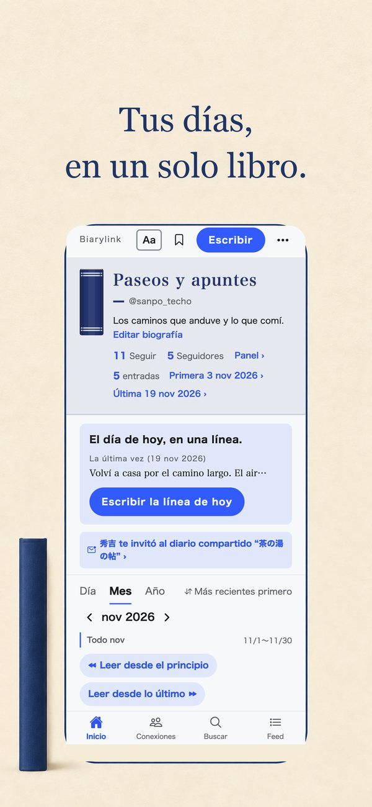
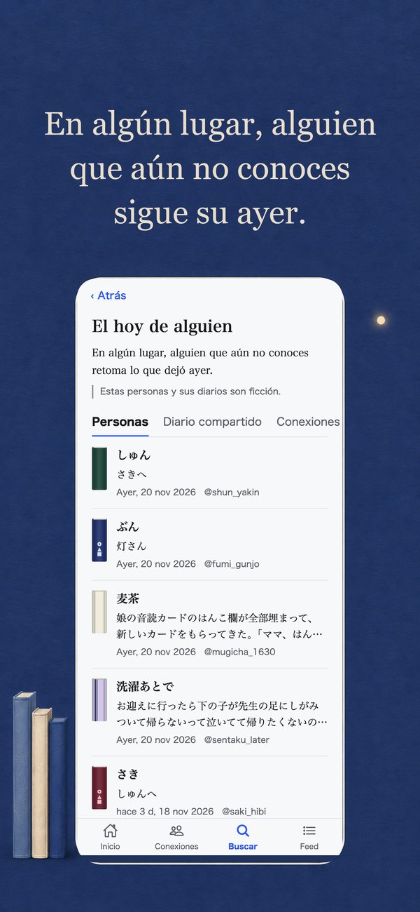
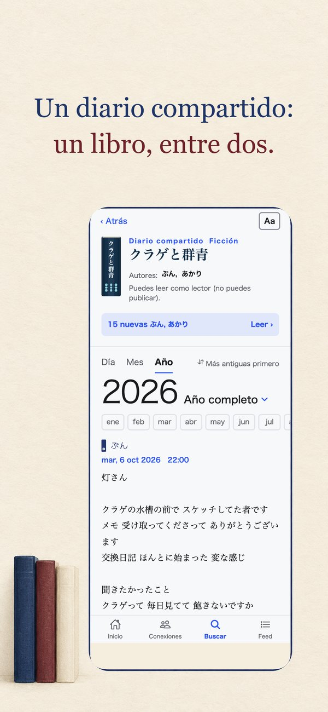
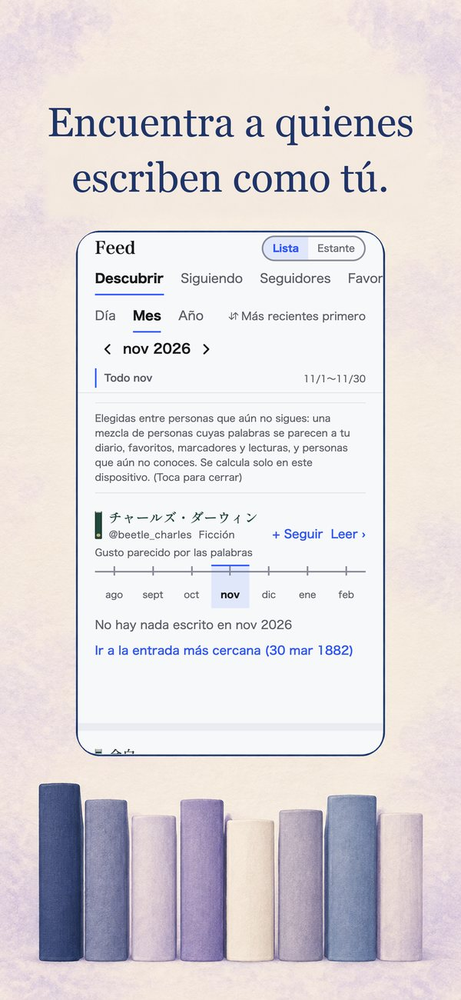
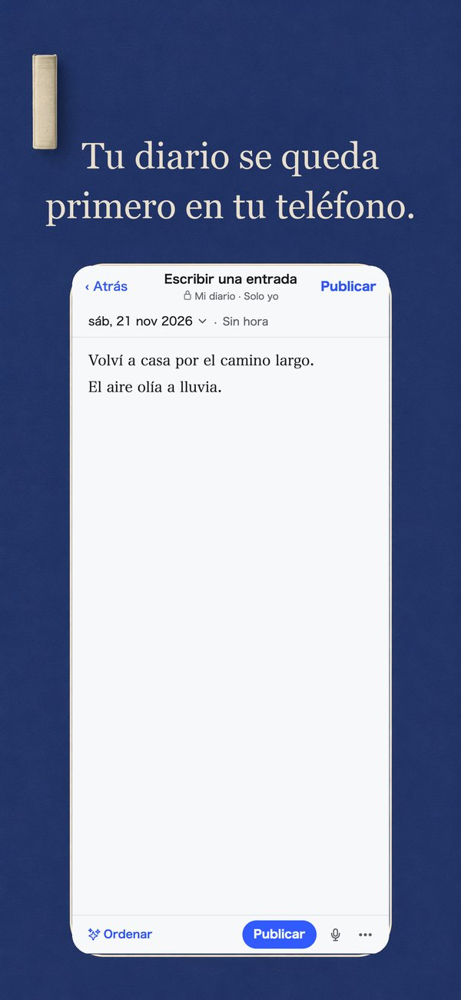

¿Cansado de publicar solo para que te vean?
Biarylink es un lugar para escribir primero para ti, antes de mostrárselo a nadie.
Cansado de buscar la foto perfecta
La mayoría de los días no traen una foto bonita. Aquí son solo palabras: escribe lo que pasó hoy.
No quieres estar pendiente de los «me gusta»
Este no es un lugar para competir con números. Tu diario se queda primero en tu teléfono. Después decides si lo compartes.
Escribir bien todos los días cuesta
Una línea basta, o usa tu voz. Solo los días que puedas. Vuelve atrás por día, mes y año, y sin darte cuenta ya es un libro.
Todo es gratis
No necesitas cuenta para empezar y no hay publicidad. Prueba escribir primero y sigue si te gusta.
Pantallas
Desliza hacia los lados para ver más.





Lo que puedes hacer
Escribir, releer y leer el hoy de alguien.
Escribir
Anota el día de hoy, aunque sea en una línea. También puedes escribir con la voz. Tu diario se guarda primero en este teléfono.
Releerlo como tu propio libro
Elige el color, el diseño y la letra del lomo. Deslízate por día, mes y año para llegar a las entradas antiguas. Pon un marcador y sigue donde quedaste.
El hoy de alguien
Cuarenta personajes de ficción siguen escribiendo sus diarios: un dependiente nocturno de una tienda, una cuidadora de acuario, un cocinero en la Antártica… Los personajes y sus diarios son ficción, y los diarios están escritos en japonés.
Descubrir
Muestra personas cuyas palabras se parecen a tu diario y a los diarios que has leído. La comparación se hace solo en tu teléfono.
Compartir y conectar
Las entradas que compartes con «Todos» pueden leerlas otras personas que hayan iniciado sesión. Puedes seguir, bloquear y denunciar.
Lo que cuidamos
Puedes exportar tu diario y guardar una copia cuando quieras. Las entradas con cosas que no se pueden decir en voz alta se muestran plegadas por defecto.
Empieza con la línea de hoy.
Gratis. No necesitas cuenta para empezar.
También funciona en tu navegador: biarylink.ookamicompany.com ／ Política de privacidad ／ Términos de uso (ambos en japonés)